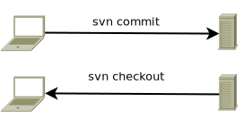
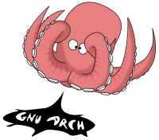
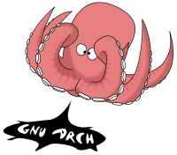

Control de versiones con git
Información del curso
Nivel de especialización
Básico
Objetivo
El alumno conocerá el sistema de control de versiones git y aprenderá el uso de esta herramienta tanto desde línea de comandos, como desde un cliente de escritorio y vía web a través de Github.
Perfil del asistente
Estudiantes, pasantes o egresados de carreras afines a computación, desarrolladores y entusiastas de la programación.
Conocimientos previos
- Conocimientos básicos de GNU/Linux y Windows a nivel usuario
- Uso de internet
- Cuenta de correo electrónico
- Conocimientos básicos de inglés a nivel técnico
Temario
-
Introducción a los sistemas de control de versiones
- Local
- Centralizado
- Distribuido
-
Introducción a git
- Inicializar un repositorio
- Clonar un repositorio existente
- Agregar archivos
- Guardar cambios en el repositorio
- Borrar archivos
- Mover archivos
- Enviar cambios al servidor
- Revisar el estado de los archivos en el directorio de trabajo
- Bitácora de revisiones del proyecto
Temario (cont)
-
Configuración del cliente git
- Datos del usuario
- Reparar fin de línea en los archivos
- Ignorar espacios en blanco
-
Trabajando con repositorios existentes
- Clonar un repositorio existente
- Resolución de conflictos
- Corregir el commit anterior
Temario (cont 2)
-
Introducción a Github
- Crear una cuenta en Github
- Administración de repositorios via web
- Cliente gráfico de git para Mac y Windows
- Documentación en Markdown
-
Trabajo colaborativo en Github
- Fork
- Pull requests
- gist
- Github Pages
- Wikis
0. Configurar el nombre de usuario
- Abrir el cuadro de diálogo de preferencias del sistema
- Selecciona la opción Usuarios
- Da clic en Facultad de Ciencias, introduce tu nombre y presiona
<Enter> - Al terminar, cierra la ventana
1. Introducción a los sistemas de control de versiones
Sistema de control de versiones
- Guarda las versiones del código fuente de un programa
- Permite mostrar los cambios en el código
- Trabaja principalmente con archivos de texto
- Asocia el cambio con el autor
- Tiene la capacidad de regresar a versiones anteriores
1.1. Local
Guardar cambios en archivos separados
prog.c prog1.c prog2.c ... prog<n>.c
Guardar cambios en carpetas separadas
tarea/prog.cversion_inicial/prog.cmodificado2/prog.cvers-28sep/prog.cProyectoFinal_2017-1_completo(Andres)/prog1.c
Desventajas del control de versiones local
- Se tienen muchos archivos bastante similares
- No se conoce cual es la última versión
- Es necesario copiar el archivo de trabajo constantemente
- Al modificar el archivo de trabajo se pierde la versión anterior
- Cuando se borra el archivo de trabajo se pierde esa revisión
Enviar cambios por correo electrónico
-
Se genera un correo por cada versión enviada
-
Puede ser tedioso encontrar una versión anterior


Utilizar almacenamiento en la nube
-
Algunos servicios de almacenamiento en la nube permiten regresar a versiones anteriores
-
Muchos de los servicios gratuitos únicamente permiten un número finito de versiones anteriores
-
Algunas veces los servicios de almacenamiento quitan las versiones anteriores más antiguas


1.2. Centralizado - CVCS
-
Se basa en un modelo cliente-servidor
-
El servidor tiene una copia de todas las versiones del código
-
Los clientes clonan el repositorio y tienen una copia de trabajo que pueden modificar
-
Cuando los cambios están listos, los clientes los envían al servidor
-
Si el servidor falla, se pierden todas las versiones del proyecto


1.3. Distribuido - DVCS
-
Cada cliente tiene una copia de todas las versiones del proyecto
-
Si el servidor falla es posible copiar todas las versiones desde un cliente
-
Es posible establecer estructuras jerárquicas

 

2. Introducción a git
-
El desarrollo del kernel Linux entre los años 1991 - 2002 no utilizaba un control de versiones per-se
-
En 2002 se utilizó un DVCS propietario llamado BitKeeper, que se ofrecía sin costo a los miembros del proyecto
-
En 2005 la compañía quiso cobrar el uso del software
-
La comunidad de desarrolladores, incluyendo a Linus Torvalds, optó por desarrollar su propia herramienta
 ⇒
⇒

2.0.1. Características de git
- Velocidad
- Diseño simple
- Soporte para múltiples ramas
- Enfoque distribuido
- Capacidad de alojar grandes proyectos
- Varios desarrolladores pueden trabajar en el mismo proyecto
- Incluye verificación de integridad en los archivos
2.0.2. Áreas de trabajo
gitpresenta tres áreas de trabajo, asociadas con los estados que puede tener un archivo- Working Directory es el directorio de trabajo.
- En el se cr y borran los archivos del proyecto.
- Staging Area es el área donde se preparan los cambios que serán versionados
- El directorio
.gitguarda todas las versiones de los archivos del proyecto

2.0.1.1. Estados de un archivo
| Estado | Descripción | Comando |
|---|---|---|
| Modified | El archivo fue editado en el directorio de trabajo | editor archivo |
| Staged | El archivo (nuevo o modificado) fue agregado al área de staging | git add archivo |
| Staged | El archivo se movió o renombró utilizando git |
git mv archivo1 archivo2 |
| Staged | El archivo se borró del área de staging utilizando git |
git rm archivo |
| Committed | Los cambios del archivo fueron guardados en el repositorio | git commit archivo |
2.0.2. Instalar git en GNU/Linux
- En Debian GNU/Linux utilizando
apt-getoaptitude
root@debian:~# aptitude install git- En Red Hat , CentOS y Oracle Linux se utiliza
yum
[root@centos ~]# yum install gitPara instalar en otras variantes de UNIX ver la documentación oficial
2.1. Inicializar un nuevo repositorio
- Para crear un repositorio se utiliza el comando
git init
$ man git-init git-init - Create an empty Git repository or reinitialize an existing one git init [-q | --quiet] [--bare] [--template=<template_directory>] [--separate-git-dir <git dir>] [--shared[=<permissions>]] [directory]- Es posible crear el directorio antes de inicializar
tonejito@linux:~$ mkdir repositoriotonejito@linux:~$ cd repositoriotonejito@linux:~/repositorio$ git initInitialized empty Git repository in /home/tonejito/repositorio/.git/tonejito@linux:~/repositorio$ ls -lAtotal 0drwxr-xr-x 7 tonejito users 147 Jun 3 17:16 .git- También se puede especificar el directorio de destino en el comando
git init
tonejito@linux:~$ git init otro-repoInitialized empty Git repository in /home/tonejito/otro-repo/.git/tonejito@linux:~$ ls -lA otro-repo/total 0drwxr-xr-x 7 tonejito users 147 Jun 3 17:19 .git- Si el repositorio será compartido en un servidor, utilizar la opción
--shared - No olvides ajustar los permisos del directorio
tonejito@linux:~$ git init --shared=group repo-compartidoInitialized empty shared Git repository in /home/tonejito/repo-compartido/.git/tonejito@linux:~$ chmod -R g+rw repo-compartido/tonejito@linux:~$ ls -la repo-compartido/total 4drwxrwsr-x 3 tonejito users 17 Jun 6 09:50 .drwxr-xr-x 57 tonejito users 4096 Jun 6 09:50 ..drwxrwsr-x 7 tonejito users 147 Jun 6 09:50 .git- Si tienes dudas, RTFM
2.2. Clonar un repositorio existente
-
Se utiliza el comando
git clonepara guardar una copia de un repositorio existente -
Es útil cuando se quiere trabajar de manera colaborativa en una aplicación (como el kernel Linux)
-
El código ṕuede ser modificado y se pueden seguir haciendo commits
-
Para clonar el repositorio es necesario conocer la URL donde se aloja el proyecto
/path/to/repo.git/file:///path/to/repo.git/http[s]://host.xz[:port]/path/to/repo.git/ftp[s]://host.xz[:port]/path/to/repo.git/ssh://[user@]host.xz[:port]/path/to/repo.git/ssh://[user@]host.xz[:port]/~[user]/path/to/repo.git/git://host.xz[:port]/path/to/repo.git/git://host.xz[:port]/~[user]/path/to/repo.git/[user@]host.xz:path/to/repo.git/[user@]host.xz:/~[user]/path/to/repo.git/
2.2.1. Ejemplo de git-clone
- Para clonar el repositorio de git de este curso se utiliza el comando
git clonede la siguiente manera
tonejito@linux:~$ git clone https://github.com/tonejito/curso-git.gitCloning into 'curso-git'...remote: Counting objects: 108, done.remote: Compressing objects: 100% , done.remote: Total 108 , reused 0 , pack-reused 65Receiving objects: 100% , 429.40 KiB | 0 bytes/s, done.Resolving deltas: 100% , done.Checking connectivity... done.- El repositorio se clona en el directorio
curso-git - Contiene los archivos del proyecto y el directorio
.git
tonejito@linux:~$ ls -A curso-git/.git .gitignore LICENSE.md presentation.mdimg index.html Makefile README.md- Ejemplo recursivo 😁
2.3. Agregar archivos
- El comando
git addse utiliza para especificar qué archivos incluirá git en el control de versiones - Los cambios del Directorio de trabajo se incluyen en el Área de Staging, es decir, se marcan para ser enviados en un commit
- El Área de Staging también es conocida como index
- La página de
mandegit addmuestra las opciones de línea de comandos
git-add - Add file contents to the indexgit add [-n] [-v] [--force | -f] [--interactive | -i] [--patch | -p][--edit | -e] [--[no-]all | --[no-]ignore-removal | [--update | -u]][--intent-to-add | -N] [--refresh] [--ignore-errors] [--ignore-missing][--] [<pathspec>...]
- Crear un archivo de texto con el nombre
README.mdy escribir algún mensaje simple en el - Muchos repositorios utilizan Markdown para el archivo README de sus repositorios
- Github tiene una versión especial de Markdown
- Existen varios editores en línea como Dillinger y StackEdit
tonejito@linux:~/repositorio$ editor README.md# Mi repositorio de gitAndrés Hernández
- Ejecutar el comando
git statuspara revisar si hay cambios
tonejito@linux:~/repositorio$ git statusOn branch masterInitial commitUntracked files:(use "git add <file>..." to include in what will be committed)README.mdnothing added to commit but untracked files present (use "git add" to track)
- Agregar el archivo
README.mdal repositorio con el comandogit add
tonejito@linux:~/repositorio$ git add README.md- Ejecutar una vez mas
git statuspara revisar si hay cambios
On branch masterInitial commitChanges to be committed:(use "git rm --cached <file>..." to unstage)new file: README.md
-
Desapareció el mensaje que sugería utilizar
git add(comparar con la lámina anterior) -
El cambio aún no está guardado, ver siguiente sección
2.4. Guardar cambios en el repositorio
- Para enviar un cambio del Área de Staging al directorio
.gitse utiliza el comandogit commit - Cada revisión generada guarda una entrada en la bitácora del repositorio
- La página de
mandegit commitmuestra las opciones de línea de comandos
git-commit - Record changes to the repositorygit commit [-a | --interactive | --patch] [-s] [-v] [-u<mode>] [--amend][--dry-run] [(-c | -C | --fixup | --squash) <commit>][-F <file> | -m <msg>] [--reset-author] [--allow-empty][--allow-empty-message] [--no-verify] [-e] [--author=<author>][--date=<date>] [--cleanup=<mode>] [--[no-]status][-i | -o] [-S[<key-id>]] [--] [<file>...]
2.4.1. git-commit interactivo
- Para guardar el archivo recién creado en la sección anterior se ejecuta
git commit
tonejito@linux:~/repositorio$ git commit README.md- Se abre un editor de texto donde debe escribirse el título y la descripción del commit
- Todas las líneas que inicien con el símbolo
#serán ignoradas - Si se guarda un mensaje vacío, se cancela el proceso de
commit - El editor de texto se toma de las variables
$GIT_EDITOR,core.editor,$VISUALo$EDITOR
Commit inicial del proyecto+ Se agrega el archivo README.md# Please enter the commit message for your changes. Lines starting# with '#' will be ignored, and an empty message aborts the commit.# Explicit paths specified without -i or -o; assuming --only paths...# On branch master## Initial commit## Changes to be committed:# new file: README.md#
2.4.2. Estructura del mensaje de un commit
- Se recomienda que la estructura del mensaje de un commit tenga los siguientes elementos
- El único elemento requerido es el título
| Línea | Elemento | Contenido |
|---|---|---|
| 1 | Título del commit | Descripción breve y concreta del cambio aplicado, menos de 50 caracteres |
| 2 | Línea en blanco | Se utiliza para separar el título del cuerpo |
| 3 | Descripción del commit | Mensaje que explica el cambio aplicado a profundidad |
| … | ✓ | Puede abarcar varias líneas de texto |
| … | ✓ | Es posible insertar elementos de sintáxis de Markdown |
| … | ✓ | Se pueden utilizar listas para enumerar elementos de manera vertical |
2.4.3. git-commit - one-liner
- Es posible ejecutar
git commity especificar el título del commit en el mismo comando - No se guarda la descripción del commit
- Puede ser utilizado en scripts o procesos automatizados
- La bitácora del repositorio se puede visualizar con el comando
git log
tonejito@linux:~/repositorio$ touch archivo-para-borrartonejito@linux:~/repositorio$ git add archivo-para-borrartonejito@linux:~/repositorio$ git commit -m "Archivo de prueba para probar git-rm"tonejito@linux:~/repositorio$ git log -n 1commit f552622d1a526ed0471ea260e3b99d1cef0c72f3Author: Andrés Hernández <andres.hernandez@ciencias.unam.mx>Date: Wed Jun 8 13:52:04 2016 -0500 Archivo vacío para probar git-rm2.5. Borrar archivos
- Para borrar archivos del repositorio se utiliza el comando
git rm - No utilizar
rmo borrar mediante el navegador de archivos - Para borrar archivos del directorio
.gitse utiliza el comandogit rm - Esta operación guarda una entrada en la bitácora del repositorio
- El archivo también se borra del Directorio de trabajo
- Se conservan las versiones anteriores en el repositorio
- La página de
mandegit rmmuestra las opciones de línea de comandos
git-rm - Remove files from the working tree and from the indexgit rm [-f | --force] [-n] [-r] [--cached] [--ignore-unmatch] [--quiet] [--] <file>...
2.5.1. Ejemplo de git-rm
git rmborra el archivo del Directorio de trabajo y marca el cambio en el Área de Staging
tonejito@linux:~/repositorio$ ls -ltotal 4-rw-r--r-- 1 tonejito users 0 Jun 8 13:45 archivo-para-borrar-rw-r--r-- 1 tonejito users 44 Jun 6 18:01 README.mdtonejito@linux:~/repositorio$ git rm archivo-para-borrarrm 'archivo-para-borrar'tonejito@linux:~/repositorio$ git statusOn branch masterChanges to be committed: deleted: archivo-para-borrar- Es necesario guardar el cambio en el directorio
.gitcongit commit
tonejito@linux:~/repositorio$ git commit -m "Prueba de git-rm" archivo-para-borrar[master 1f6d57a] Prueba de git-rm 1 file changed, 0 insertions, 0 deletions delete mode 100644 archivo-para-borrar2.6. Mover archivos
- El comando
git mvse utiliza para mover o renombrar archivos del repositorio - No utilizar
mvo renombrar desde el navegador de archivos - La página de
mandegit mvmuestra las opciones de línea de comandos
git-mv - Move or rename a file, a directory, or a symlinkgit mv [-v] [-f] [-n] [-k] <source> <destination>git mv [-v] [-f] [-n] [-k] <source> ... <destination directory>
2.6.1. Ejemplo de git-mv
- Creación de archivos de prueba
tonejito@linux:~/repositorio$ touch archivo-para-mover archivo-para-renombrartonejito@linux:~/repositorio$ git add archivo-para-mover archivo-para-renombrartonejito@linux:~/repositorio$ git commit -m "Archivos vacíos para prueba de git-rm" archivo-para-*[master 657aa04] Archivos vacíos para prueba de git-rm 2 files changed, 0 insertions, 0 deletions create mode 100644 archivo-para-mover create mode 100644 archivo-para-renombrar- Prueba de
git mvmoviendo un archivo a otro directorio y renombrando otro archivo
tonejito@linux:~/repositorio$ mkdir -v directoriomkdir: created directory ‘directorio’tonejito@linux:~/repositorio$ git mv archivo-para-mover directorio/tonejito@linux:~/repositorio$ git mv archivo-para-renombrar archivo-con-otro-nombretonejito@linux:~/repositorio$ git commit -m "Prueba de git-mv"[master 4f30937] Prueba de git-mv 2 files changed, 0 insertions, 0 deletions rename archivo-para-renombrar => archivo-con-otro-nombre rename archivo-para-mover => directorio/archivo-para-mover 2.7. Enviar cambios al servidor
- En los repositorios que se han clonado, es común tener una URL para descargar (fetch) y otra para enviar (push)
- El repositorio remoto se llama
originy la rama por defecto se llamamaster - Cuando la URL remota ya esta configurada, es posible enviar los cambios a un repositorio remoto
2.7.1. Listar la URL del repositorio remoto
- Para enviar cambios al servidor es necesario tener configurada una URL remota para envío o push
- Es posible listar las URL de los repositorios remotos con
git remote - En un nuevo repositorio es necesario establecer la URL remota
tonejito@linux:~/repositorio$ git remote add origin https://github.com/tonejito/repositorio.gittonejito@linux:~/repositorio$ git remote -vorigin https://github.com/tonejito/repositorio.git origin https://github.com/tonejito/repositorio.git 2.7.2. Enviar cambios con git-push
- Para enviar los cambios al servidor la primera vez se ejecuta
git pushde la siguiente manera
tonejito@linux:~/repositorio$ git push -u origin masterUsername - Las demás veces sólo es necesario utilizar
git push
tonejito@linux:~/repositorio$ git pushUsername - Dependiendo de la versión y configuración de git, puede aparecer una advertencia sobre
push.default
2.8. Revisar el estado de los archivos en el directorio de trabajo
gitreconoce cuando se realizan cambios en los archivos del Directorio de trabajo- Para guardar los cambios en el repositorio del directorio
.gites necesario ejecutargit commit
| Estado del archivo | Comando | Descripción |
|---|---|---|
| Untracked | touch <file> |
Se creó un nuevo archivo en el Directorio de trabajo Aún no se agrega al control de versiones |
| new file | git add <file> |
Se agregó un nuevo archivo para ser versionado |
| deleted | git rm <file> |
El archivo se borró del repositorio |
| renamed | git mv <src> <dst> |
El archivo cambió de nombre o fue movido |
| modified | gedit <file> |
El contenido del archivo fue modificado |
| both modified | 😅 🔫 😡 | Es necesario hacer merge 😱 |
2.8.1. Untracked files - Archivos nuevos sin versionar
- Cuando se crea un archivo nuevo, se marca como Untracked
- Para agregar el archivo al repositorio se utiliza
git add(ver siguiente sección)
tonejito@linux:~/repositorio$ touch archivo-externotonejito@linux:~/repositorio$ git statusOn branch masterYour branch is up-to-date with 'origin/master'.Untracked files:(use "git add <file>..." to include in what will be committed)archivo-externonothing added to commit but untracked files present (use "git add" to track)
2.8.2. git add ⇨ new file
- Para agregar un archivo nuevo al repositorio se utiliza
git add - No olvidar ejecutar
git commitpara guardar el cambio
tonejito@linux:~/repositorio$ git add archivo-nuevotonejito@linux:~/repositorio$ git statusOn branch masterChanges to be committed:(use "git reset HEAD <file>..." to unstage)new file: archivo-nuevo
2.8.3. git rm ⇨ deleted
- Para borrar un archivo del repositorio se utiliza
git rm - No olvidar ejecutar
git commitpara guardar el cambio
tonejito@linux:~/repositorio$ git rm archivo-para-borrarrm 'archivo-para-borrar'tonejito@linux:~/repositorio$ git statusOn branch masterChanges to be committed:(use "git reset HEAD <file>..." to unstage)deleted: archivo-para-borrar
2.8.4. git mv ⇨ renamed
- Para mover un archivo del repositorio a otra carpeta se utiliza
git rm - También se utiliza para cambiar de nombre a los archivos
- No olvidar ejecutar
git commitpara guardar el cambio
tonejito@linux:~/repositorio$ git mv archivo-para-mover directorio/tonejito@linux:~/repositorio$ git mv archivo-para-renombrar archivo-con-otro-nombretonejito@linux:~/repositorio$ git statusOn branch masterChanges to be committed:(use "git reset HEAD <file>..." to unstage)renamed: archivo-para-renombrar -> archivo-con-otro-nombrerenamed: archivo-para-mover -> directorio/archivo-para-mover
2.8.5. modified - Archivos editados
- Al editar un archivo, git lo marca como modified
- No olvidar ejecutar
git commitpara guardar el cambio - Si se desea regresar a la última versión conocida, ejecutar
git checkout <archivo>
tonejito@linux:~/repositorio$ git statusOn branch masterYour branch is up-to-date with 'origin/master'.Changes not staged for commit:(use "git add <file>..." to update what will be committed)(use "git checkout -- <file>..." to discard changes in working directory)modified: pagina.htmlno changes added to commit (use "git add" and/or "git commit -a")
2.9. Bitácora de revisiones del proyecto
- El comando
git logse utiliza para visualizar la bitácora de revisiones del proyecto - En la bitácora se muestra cada commit realizado en la rama actual
tonejito@linux:~/repositorio$ git logcommit be47c1b99c212c0b25d7351c1d9bd8de33c06dd8Author: Andrés Hernández <andres.hernandez@ciencias.unam.mx>Date: Thu Jun 9 10:53:34 2016 -0500 Página de prueba para `curso-git` + Código base `html5` sin estilos ... ... ... ... ... ... más entradas del log ... commit 1b75a81323d5a6befff5d4ddfd3ad3254914c8daAuthor: Andrés Hernández <andres.hernandez@ciencias.unam.mx>Date: Wed Jun 8 13:46:21 2016 -0500 Commit inicial del proyecto + Se agrega el archivo README.md